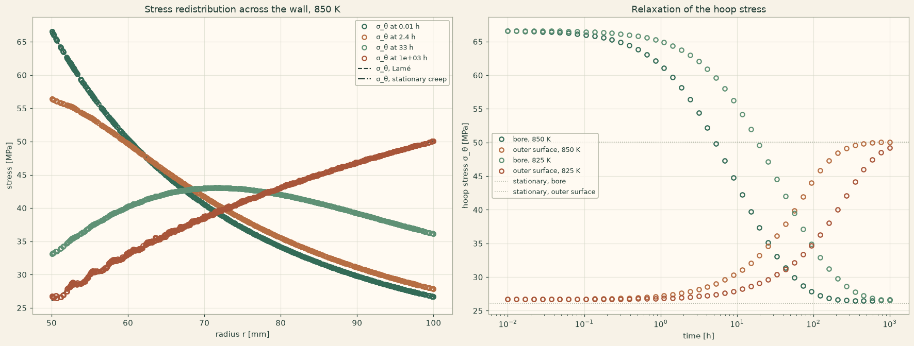
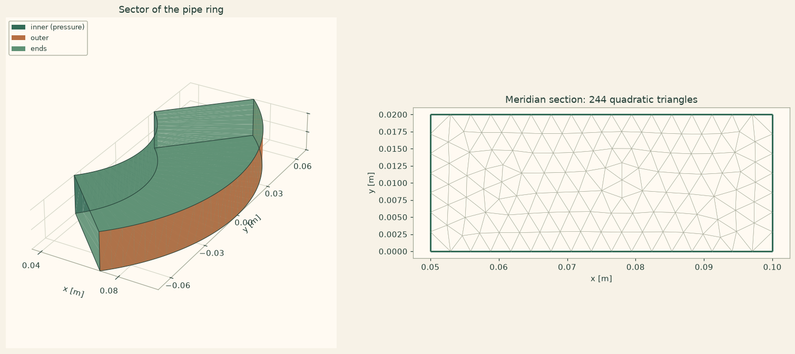

Docs › Examples › Creep relaxation in a hot thick-walled tube
Creep · 2D-axisymmetric
Creep relaxation in a hot thick-walled tube
A thick-walled pipe under internal pressure creeps at high temperature; the stresses relax from the elastic Lamé distribution to the stationary creep distribution.

What it computes
OneSimulation reads a ring of the pipe from a STEP file, cuts its meridian section and solves axisymmetric small-strain equilibrium with a temperature-activated Norton creep law at every quadrature point of quadratic triangles, at 850 K and at 825 K over 1000 hours. The script that builds the STEP file comes with the notebook.
What it checks
The start matches Lamé within 0.3 % of the pressure; at 850 K all stresses reach the closed-form stationary creep solution within 2.7 % of the pressure (rms 0.5 %); the bore hoop stress relaxes halfway after 9 h at 850 K and after 33 h at 825 K.
Geometry
The notebook starts at the import of the CAD file hot_tube_creep_relaxation.step: STEP (AP242), readable by any CAD program, with the names of the faces that the boundary conditions use. Put it next to the notebook.

The geometry script
The script hot_tube_creep_relaxation_geometry.py builds the geometry with the CAD objects of OneSimulation and writes the file. Change a dimension there, run it, and run the notebook again.
"""Geometry of the OneSimulation example "Creep relaxation in a hot thick-walled tube".
Builds a 90-degree sector of a thick-walled tube (inner radius 50 mm, outer radius 100 mm, a 20 mm
long ring of a long pipe, axis along z) with the CAD objects of OneSimulation, centred on the x axis,
and writes hot_tube_creep_relaxation.step. The example computes on its meridian section y = 0. The
faces are named inner, outer, bottom (z = 0) and top (z = 20 mm).
"""
import numpy as np
from onesim.cad.d3 import AnnularCylinder
tube = AnnularCylinder(inner_radius=0.050, outer_radius=0.100, length=0.020)
sector = tube.sector(
np.pi / 2, axis=(0.0, 0.0, 1.0), start=(np.cos(-np.pi / 4), np.sin(-np.pi / 4), 0.0)
)
sector = sector.grouped(
inner=sector.select(
faces=lambda face: face.kind == "cylinder" and face.radius < 0.075
),
outer=sector.select(
faces=lambda face: face.kind == "cylinder" and face.radius > 0.075
),
bottom=sector.select(faces=lambda face: abs(face.center[2]) < 1e-9),
top=sector.select(faces=lambda face: abs(face.center[2] - 0.020) < 1e-9),
)
sector.save("hot_tube_creep_relaxation.step")The notebook
The complete notebook, cell by cell. Run it to produce the figures and the comparison printout.
Steam pipes, pressure vessels and reactor components operate at temperatures where steel creeps. Under constant internal pressure the stresses in a thick wall do not stay at their elastic values: creep relaxes the high hoop stress at the bore and shifts load to the outer fibres, until a stationary creep distribution is reached. How fast this happens is controlled by the temperature through the thermally activated creep rate (Norton law with an Arrhenius factor),
with the von Mises stress \(q\) and the stress deviator \(\mathbf s\).
Setup. Inner radius \(a=50\) mm, outer radius \(b=100\) mm, internal pressure \(p=40\) MPa, a long pipe (plane strain, \(\varepsilon_z=0\)). \(E=180\) GPa, \(\nu=0.3\); Norton constants \(A=2\cdot10^{-48}\) Pa\(^{-5}\)s\(^{-1}\) at \(T_0=850\) K, \(n=5\), \(Q=300\) kJ/mol. The pipe runs at 850 K and, for comparison, at 825 K, for 1000 hours. The ring comes from the CAD file hot_tube_creep_relaxation.step, written by hot_tube_creep_relaxation_geometry.py with the CAD objects of OneSimulation; the computation uses its meridian section.
| edge of the section | condition | |---|---| | inner | pressure \(p\) | | outer | free | | bottom, top | axial displacement 0 (long pipe) |
Reference. At \(t=0\) the stresses are elastic (Lamé). For \(t\to\infty\) the creep strain rate dominates and the stresses become stationary; for the Norton law in plane strain they are, with \(\beta=2/n\) (e.g. Kraus, Creep Analysis, Wiley 1980, Sec. 4.2),
For \(n=1\) (\(\beta=2\)) this is again the Lamé solution. The stationary distribution does not depend on \(A\), \(Q\) or \(T\); the temperature sets only how fast it is reached.
import numpy as np
from onesim.cad.exchange import load
from onesim.materials.solids import CreepMaterialPoint, PowerLawCreep
from onesim.meshing import TriangularMesher
from onesim.physics.solid_mechanics import SmallStrainSolid
from onesim.visualization import plots, theme
theme.set()Geometry and mesh
load returns the sector of the ring with its named faces; section cuts the meridian plane \(y=0\), whose \(x\) coordinate is the radius. Quadratic triangles of 3 mm.
ring = load("hot_tube_creep_relaxation.step")
faces = ring.boundaries
meridian = ring.section((0, 1, 0), origin=(0, 0, 0))
edges = meridian.boundaries
mesh = TriangularMesher(target_size=0.003).generate(meridian)
fig = plots.figure(1, 2, size=(14, 6))
plots.geometry(
ring,
selection={
"inner (pressure)": faces.inner,
"outer": faces.outer,
"ends": faces.bottom | faces.top,
},
labels=False,
camera=plots.Camera(elevation=30, azimuth=-60),
title="Sector of the pipe ring",
ax=fig[0],
)
plots.mesh(
mesh,
groups=("all",),
legend=False,
title=f"Meridian section: {mesh.cell_count} quadratic triangles",
ax=fig[1],
)
plots.show()Model
SmallStrainSolid with axisymmetric kinematics carries a CreepMaterialPoint with the Norton law and its Arrhenius factor; the temperature is the only difference between the two runs. The load steps grow logarithmically from 36 s to 1000 h.
inner, outer, pressure, exponent = 0.050, 0.100, 40e6, 5.0
law = PowerLawCreep(
coefficient=2e-48,
stress_exponent=exponent,
activation_energy=3e5,
reference_temperature=850.0,
)
hour = 3600.0
times = np.r_[0.0, np.geomspace(0.01, 1000.0, 45)] * hour
results = {
temperature: SmallStrainSolid(
youngs_modulus=180e9,
poisson_ratio=0.3,
kinematics="axisymmetric",
material_point=CreepMaterialPoint(laws=(law,), temperature=temperature),
).solve(
mesh=mesh,
times=times,
order=2,
displacements=((edges.bottom, "z", 0.0), (edges.top, "z", 0.0)),
tractions=((edges.inner, (pressure, 0.0)),),
)
for temperature in (850.0, 825.0)
}
radius = results[850.0].quadrature_coordinates[:, 0]Comparison with the closed-form solutions
The stresses at the quadrature points against Lamé at \(t=0\) and against the stationary creep solution at 1000 h; the components are \((r, z, \theta)\). At 850 K the wall has reached the stationary state after 1000 h; at 825 K the axial stress, which relaxes last, is still on its way.
beta, ratio = 2 / exponent, outer / inner
lame = {
"σ_r": lambda r: pressure / (ratio**2 - 1) * (1 - (outer / r) ** 2),
"σ_θ": lambda r: pressure / (ratio**2 - 1) * (1 + (outer / r) ** 2),
"σ_z": lambda r: 2 * 0.3 * pressure / (ratio**2 - 1) + 0 * r,
}
creep = {
"σ_r": lambda r: -pressure * ((outer / r) ** beta - 1) / (ratio**beta - 1),
"σ_θ": lambda r: pressure
* (1 + (beta - 1) * (outer / r) ** beta)
/ (ratio**beta - 1),
"σ_z": lambda r: pressure
* (1 + (beta / 2 - 1) * (outer / r) ** beta)
/ (ratio**beta - 1),
}
slot = {"σ_r": 0, "σ_z": 1, "σ_θ": 2}
deviation = lambda values, reference: np.abs(values - reference(radius)) / pressure
for name, k in slot.items():
print(
f"{name}: elastic start deviates from Lamé by at most {deviation(results[850.0].stress[0, :, k, k], lame[name]).max():.1e} p; after 1000 h "
+ ", ".join(
f"at {T:.0f} K from the creep solution by {100 * deviation(result.stress[-1, :, k, k], creep[name]).max():.2f} % of p at most "
f"(rms {100 * np.sqrt(np.mean(deviation(result.stress[-1, :, k, k], creep[name]) ** 2)):.2f} %)"
for T, result in results.items()
)
)
print(
f"hoop stress at the bore: {lame['σ_θ'](inner) / 1e6:.1f} MPa elastic, {creep['σ_θ'](inner) / 1e6:.1f} MPa stationary; "
f"at the outer surface {lame['σ_θ'](outer) / 1e6:.1f} MPa and {creep['σ_θ'](outer) / 1e6:.1f} MPa"
)
bore, mantle = np.argmin(radius), np.argmax(radius)
for T, result in results.items():
halfway = (
times[
np.argmax(
result.stress[:, bore, 2, 2]
<= 0.5 * (lame["σ_θ"](radius[bore]) + creep["σ_θ"](radius[bore]))
)
]
/ hour
)
print(
f"{T:.0f} K: the bore hoop stress has relaxed halfway after {halfway:.1f} h; "
f"largest equivalent creep strain after 1000 h {100 * max(p.equivalent_creep_strain for cell in result.material_history[-1] for p in cell):.3f} %"
)Figure
Left the hoop stress across the wall at four times at 850 K, with Lamé and the stationary solution; right the hoop stress at the bore and at the outer surface over time for both temperatures. At 825 K the same redistribution takes about four times longer.
line = np.linspace(inner, outer, 200)
mid = np.abs(results[850.0].quadrature_coordinates[:, 1] - 0.010) < 0.004
snapshots = [1, 22, 32, len(times) - 1]
fig = plots.figure(1, 2, size=(16, 6))
plots.line(
points={
f"σ_θ at {times[i] / hour:.2g} h": (
1e3 * radius[mid],
results[850.0].stress[i, mid, 2, 2] / 1e6,
)
for i in snapshots
},
reference={
"σ_θ, Lamé": (1e3 * line, lame["σ_θ"](line) / 1e6),
"σ_θ, stationary creep": (1e3 * line, creep["σ_θ"](line) / 1e6),
},
xlabel="radius r [mm]",
ylabel="stress [MPa]",
title="Stress redistribution across the wall, 850 K",
legend="upper right",
ax=fig[0],
)
plots.line(
points={
f"{where}, {T:.0f} K": (times[1:] / hour, result.stress[1:, index, 2, 2] / 1e6)
for T, result in results.items()
for where, index in (("bore", bore), ("outer surface", mantle))
},
hlines={
"stationary, bore": creep["σ_θ"](radius[bore]) / 1e6,
"stationary, outer surface": creep["σ_θ"](radius[mantle]) / 1e6,
},
scale="logx",
xlabel="time [h]",
ylabel="hoop stress σ_θ [MPa]",
title="Relaxation of the hoop stress",
legend="center left",
ax=fig[1],
)
plots.show()Going further
Give the wall a radial temperature profile through temperature=lambda point, time: ...: the hot bore then relaxes faster than the cooler outside. Add a primary Norton-Bailey term as a second law, or switch the pressure off after some time and follow the reversed creep.